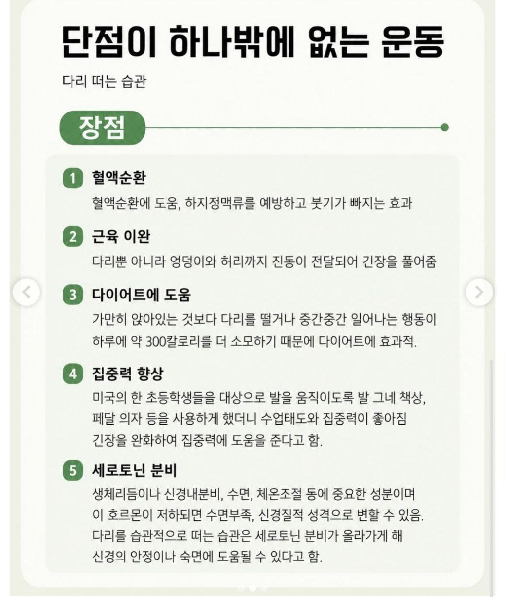

아 복달아나는 건 좀 그런데

아 복달아나는 건 좀 그런데
이거볼때마다 다리떠는데 계속 까먹음
출처와 근거는??
복달아난다는 근거?
놀랍게도 다리떠는 사람들 100%가 200년 안에 사망했다고 함 이게 복이 없다는 근거가 아니면 뭐임 ㅋㅋ
다리 떨면 안 되겠네;;
다리안떨면 300년산다
인터넷에 써있으면 진리야! ㅋㅋㅋ
어릴때는 공부하다 집중안되면 다리 겁나떨었는데 부모님한테 혼남 복나간다고 ㅋㅋㅋㅋㅋ
않이 복이 달아난다잖아요~~!!!
아 단점이 너무커서못하겠네 복달아나는건 안되지
옛날에 해외 주재원하는데 현지직원하고 얘기하다가 나이도 먹을만큼 먹은 아지매가 다리를 엄청 떨길래 무심코 다리떨면 복나간다 했다가 대체 그게 뭔 말도 안되는 소리냐고 쿠사리 먹음 ㅋㅋㅋㅋ
등짝 맞음과 잔소리 들음도 있음
다른 사람 앞에서도 습관처럼 떠는게 문제긴하지 ㅋㅋㅋ
그거 막으려고 복 달아난다는 말을 붙인거고.
머래 많이 하면 힘듬도 있는데
다른사람이 거슬려함이 제일
사무실에서 다리 존나 떠는 새끼들은 꼭 바지도 부스럭 거리는 거 입고와서 개시끄러움
미안하다 내가 다리를 너무 떨어서 코스피가...
Luk 떨어짐 ㄷ
복아 게 섯거라~!
단순히 '보기 안 좋아서'란 이유로 예의나 관습이 만들어지면 안 되는 이유
단점이 이거 하나가 아니잖아.
도서관에서 한번 할배가 떨지말아달라한적있긴함
LUK 떨어지면 크리티컬 잘 안뜨는데
복은 이벤트로만 들어오는거라 스탯 관리 잘해야함
복나가는게 문제냐 없어보이는게 문제지
다리떨기 == 문신
급이라 생각함
차에서 떨면 동승자 멀미난다…
난 어르신들한테 다리 떨면 혈액순환에 좋다고 권장하고다님 그럼 웬만하면 혹함
이래서 내가 로또가 안되는 건가..